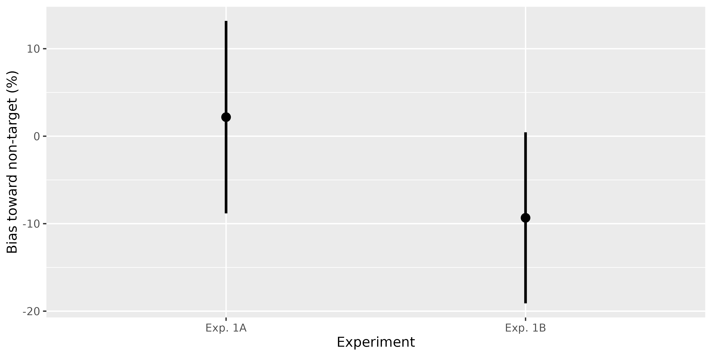
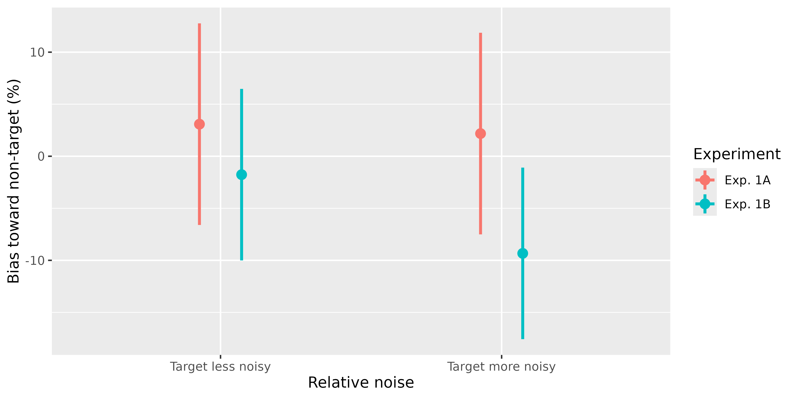
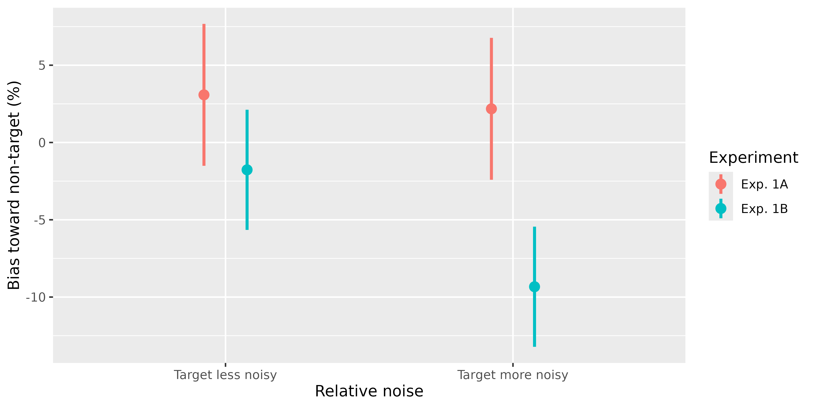

Pointrange plot
Usage
plot_pointrange(
data,
mapping,
pos = position_dodge(0.3),
pointsize = I(3),
linesize = I(1),
pointfill = I("white"),
pointshape = NULL,
within_subj = F,
wid = "uid",
bars = "ci",
withinvars = NULL,
betweenvars = NULL,
x_as_numeric = F,
custom_geom_before = NULL,
connecting_line = F,
pretty_breaks_y = F,
pretty_y_axis = F,
exp_y = F,
print_aggregated_data = F,
do_aggregate = F,
add_margin = F,
margin_label = "all",
margin_x_vals = NULL,
bars_instead_of_points = F,
geom_bar_params = list(),
add_jitter = F,
individual_points_params = list(),
drop_NA_subj = F,
design = "between",
debug = F
)Arguments
- data
the dataset to use
- mapping
a list of plot aesthetics (e.g., aes(x = varA, y=varB))
- pos
position adjustment function (e.g., position_dodge())
- pointsize
size for the points (e.g., "I(1)")
- linesize
size for the lines (e.g., "I(1)")
- pointfill
fill for the points (e.g., "I('white')")
- pointshape
shape for the points (e.g., "I(22)")
- within_subj
should we use within-subject adjustment?
- wid
within-subject ID variable
- bars
should we use confidence intervals ("ci") or standard errors ("se")?
- withinvars
within-subject variables
- betweenvars
between-subject variables
- x_as_numeric
should we treat x as numeric (otherwise it is treated as is)?
- custom_geom_before
any custom geom to add before points and connecting line (geoms that should be on top of the pointrange can be added in a usual manner)
- connecting_line
should we add connecting line (T/F)?
- pretty_breaks_y
prettify y breaks
- pretty_y_axis
prettify y axis
- exp_y
exponentiate y (it's better to use this than scale_y_exp if pretty_breaks_y is used)
- print_aggregated_data
print aggregated data used for plotting to console
- do_aggregate
aggregate data by all conditions before plotting (False)
- add_margin
add margin that would show the aggregate over all or subset of x-axis values (T/F)
- margin_label
margin label to use
- margin_x_vals
which levels of x-axis variable to aggregate over (NULL means all of them)
- bars_instead_of_points
use geom_bar instead of geom_point
- geom_bar_params
parameters for geom_bar if it is used
- add_jitter
add jittered individual data points
- individual_points_params
a list of parameters for the individual data points
- drop_NA_subj
drop subjects that have NAs after aggregation when computing within-subject errorbars
- design
design type to help avoid explicitly listing variables as withinvars all the time (values: between (default) - all vars not explicitly mentioned are treated as between; within - all vars not explicitly mentioned are treated as within)
- debug
outputs additional debugging info if TRUE
Details
For point and line properties (e.g., pointfill) passing NULL allows to avoid setting these values (useful when they are mapped to some variables).
Examples
data(memory_noise)
# Between-subject CI: compare Experiments 1A and 1B
target_higher <- memory_noise[
memory_noise$relative_noise == "target more noisy",
]
plot_pointrange(
target_higher,
aes(x = experiment, y = bias_percent)
) + labs(
x = "Experiment",
y = "Bias toward non-target (%)"
)
#> Warning: Variables experiment and experiment are not listed in withinvars or betweenvars but are used as plot parameters. They would be considered as betweenvars.

# Mixed design: relative noise is within subjects, experiment is between
plot_pointrange(
memory_noise,
aes(x = relative_noise, color = experiment, y = bias_percent),
wid = "participant",
within_subj = TRUE,
withinvars = "relative_noise",
betweenvars = "experiment",
connecting_line = TRUE
) +
labs(
x = "Relative noise",
y = "Bias toward non-target (%)",
color = "Experiment"
) +
scale_x_discrete(labels = c(
"target less noisy" = "Target less noisy",
"target more noisy" = "Target more noisy"
))
#> `geom_line()`: Each group consists of only one observation.
#> ℹ Do you need to adjust the group aesthetic?

# The same mixed design with standard errors
plot_pointrange(
memory_noise,
aes(x = relative_noise, color = experiment, y = bias_percent),
wid = "participant",
within_subj = TRUE,
withinvars = "relative_noise",
betweenvars = "experiment",
bars = "se"
) +
labs(
x = "Relative noise",
y = "Bias toward non-target (%)",
color = "Experiment"
) +
scale_x_discrete(labels = c(
"target less noisy" = "Target less noisy",
"target more noisy" = "Target more noisy"
))
